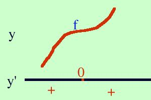

| y = x3 - 2 Calcolo la derivata prima della funzione y' = 3x2 Pongo la derivata uguale a zero per cercare eventuali punti estremanti 3x2 = 0 x = 0 Calcolo il valore della funzione di partenza nel punto 0 f(0) = 03 - 2 = -2 il punto A( 0, -2) e' un punto estremante, devo vedere se e' un massimo, un minimo o un flesso orizzontale Studio il segno della derivata prima 3x2 > 0 essendo un quadrato x2 e' sempre positivo cioe' la derivata e' positiva per tutti i valori eccetto 0 per cui si annulla  Faccio un grafico (costruisco la figura dal basso verso l'alto) tracciando per y' l'orizzontale e segnando il punto x=0; prima del punto la derivata e' positiva e scrivo +, dopo il punto e' positiva e metto +. Dove y' e' positiva traccio per la y una curva verso l'alto ricordando che in zero (dove si annulla la derivata prima) deve essere orizzontale Queste curve mi simulano l'andamento della funzione. Cio' che ottengo e' un flesso orizzontale ascendente, quindi A( 0, -2) e' un punto di flesso ascendente per la funzione data e lo indico con f( 0, -2) |